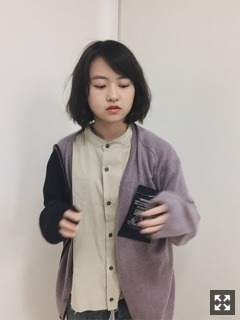
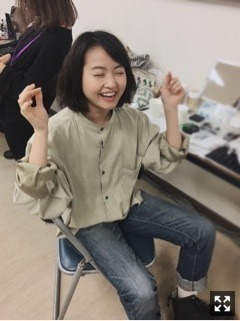
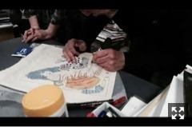
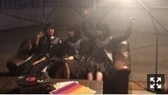
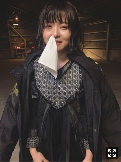

やー！！
16th最後の握手会
息抜きになれば、なってたらいいな
と思った一日でした。
ありがとうございました！！

ブレた！！

デニム久しぶりに履いたよ〜
メンズライクな感じ〜
MdN発売中です！
連載MmC(MARIKA meets CREATORS)
のお相手はイラストレーターの
宇野亞喜良さん。
寺山修司さんの舞台ポスターのことから
マジョリ画、ファッションとの関わりまで
お話を聞きました。
過去も現代も変わらない
可憐で繊細な少女の作品がたくさん。
宇野さんが関わっていくものひとつひとつで
時代の変化を知ることができました。
過去にこんな作品もあったのかあ
という発見もあったり。
すごく楽しい時間でした、、
装苑80周年記念号の表紙原画を見て
編集長から贈られたその
イラスト入りトートバッグに
名前入りでサインいただいたときゃ
そりゃもう興奮のピークのピークだったよ！
ぎゃーー

↑描いてる様子
お茶目で素敵な方、、
貴重なお時間ありがとうございました。

17th cw曲『Another Ghost』
MV公開されています。
https://youtu.be/D2RFjPlUJ3I
西野、飛鳥、万理華という謎のユニット。
MV監督は井上強さん。
最新技術のカメラの動きがすごい。
表題曲と同じくすべてのシーン
踊りっぱなしです。
3人がんばりました！

鼻水やばかった
ボロボロ
みなさん花粉大丈夫ですか？
私は鼻がずっとむず痒いです！！アー！！！
まりか